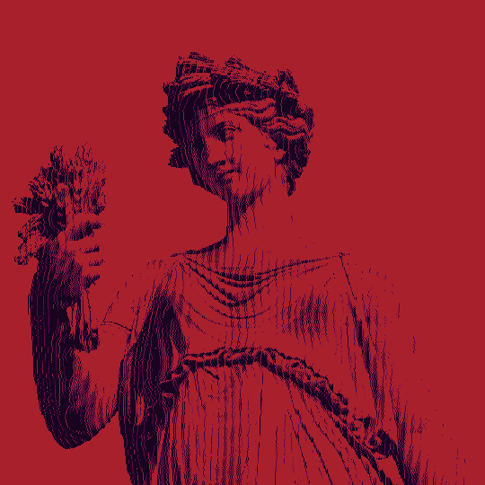

Posted to @omnidisplay on instagram, May 29th, 2024
This post serves as a farewell for the foreseeable future. It’s been an amazing 4 years and I cannot be more grateful for the continued support and love my works have received over that time, but this project is at a creative end.
For those of you who hate reading long text posts (I understand, I am one of those people) here’s the TLDR;
- I will most likely not post Lain edits on this account for a very long time.
- My edits, in bulk, in their original files, will be downloadable via a google drive link on my website
(link)
- I won’t be checking Instagram actively. If you wish to contact me, please do so via discord @omnidisplay or by email omni@waifu.club
- I’m working on other separate projects and may come back to announce those, but that’s about it.
Ok here’s the long boring shit;
As you have all probably noticed, the gap between posts has become longer and longer for a while now; to the point where “are you dead”/“come back” comments/messages were becoming the most common. The truth is that I’ve been struggling creatively to maintain this project while simultaneously setting higher expectations for myself. This is in conjunction with my ever-shifting personal life and goals; it’s not 2020 anymore where we’re all trying to make something out of wasting away on our computers. I’ve mainly just been putting off making edits, or I’ll make them and not post them for a while because I don’t feel like they’re ‘good enough.’ That all being said, it feels healthier to officially state that I’m done with this account rather than constantly putting it on the back-burner.
Instagram is not the platform it used to be either, I liked instagram for the gallery style and the creative constraint a square canvas put on my works. Now it’s trying too hard to be a TIkTok clone, and I absolutely refuse to post reels. I never cared about growth, I just wanted to make art and share it with people; but I have to admit it’s easy to let those numbers get to you - they’re psychologically designed to. It’s easy to look at a post that didn’t do as well and think people hated it, when in reality instagram probably just didn’t feel like showing it to people. This platform fosters a pretty toxic motivation where if you’re constantly not spitting shit out, you loose followers, and I don’t want to participate in that.
However, once again, I want to re-iterate how much I appreciate the support you all have given over the years, I read every single comment and message you guys send like a million times because it makes me super happy to see that i’ve created something that people enjoy and are inspired by. To those of you who have gone to create your own Lain related stuff, a special thanks to you for keeping this show alive over 25 years later.
Anyway, it’s been fun.
I’ll still add stuff to my website, and hopefully I’ll have stuff to share about other projects. But for now, this is a goodbye. I hope at least one of my 465+ of my edits (that number still shocks me lol) has inspired someone to go out there and create something too. Glitchart is beautiful because there’s no barrier to entry, no skill floor - you just *make* it! So I will leave you all with this;
Become the next omnidisplay.
make. more. glitchart.
Fwuark all the images and dither them to hell!
LALL, glitch on, and take care,
omni </display>
